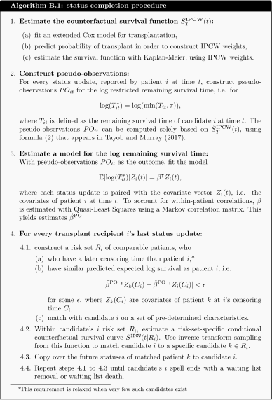

B Completing the status updates streams for transplant recipients
The ELAS and ETKidney simulators require complete streams of status updates to be available for all patient registrations, which means that every registration must end with a waiting list removal (R) or death (D). However, most kidney or liver candidates are transplanted, making these endpoints – and any status that would have occurred between transplantation and candidate death or removal – unobserved. This is a general problem faced for the development of discrete-event simulators for organ allocation. The SAM simulators address it by matching transplant recipients to not-yet-transplanted patients based on their predicted remaining lifetime, with remaining life time predicted using a standard Cox model [96]. However, this approach does address for repeated measures, does not match on other relevant characteristics that might affect a candidate’s health status trajectory (such as disease group), and also does not correct for informative censoring from transplantation, which can bias mortality estimates.
To address these limitations, we modify an existing statistical procedure from [195] to complete the status update streams for patient registrations in the ELAS and ETKidney simulators. This procedure constructs for every transplant recipient \(i\) a risk set of \(R_i\) of not-yet-transplanted patients, who (a) have similar covariate profiles as patient \(i\) and (b) have similar predicted remaining survival, where remaining survival is predicted using methodology that accounts for repeated measures and corrects for informative censoring. Algorithm B.1 summarizes this procedure. Steps 1 to 2 construct pseudo-observations for the expected log remaining survival time, and Step 3 fits a model for log survival as a function of covariates. These steps are performed once on the full cohort to estimate model coefficients (\(\beta^{\text{PO}}\)). Step 4 is iteratively applied for each transplant recipient, until their registration ends with a waiting list death (D) or waiting list removal (R).

Summary of Tayob and Murray (2017)
Algorithm B.1 uses statistical methodology developed by [195]. Tayob and Murray aim to model the 12-month restricted survival time \(T^* = \min(T, \tau)\) of lung transplant candidates from pre-determined, regularly spaced landmark times \(j = 1, ..., J\). To this end, they define \(T^*_{ij}\) as the \(\tau\)-restricted remaining survival time of subject \(i\) from landmark time \(j\), and use \(\tau = 12\) months in their application. The central goal of their paper is to estimate the expected log-survival time conditional on covariates, i.e. to model \[\mathbb{E}[\log(T^*) | Z] = \beta^\intercal Z.\]
They face three statistical challenges in the estimation of this model:
- \(T^*_{ij}\) is unobserved for most candidates due to censoring,
- transplantation represents an informative censoring mechanism,
- the \(T^*_{ij}\)s exhibit within-patient correlations across the landmark times \(j\).
To address these challenges, Tayob and Murray proceed as follows:
Tayob and Murray construct for each censored \(T^*_{ij}\) a risk set \(R_i\) of individuals who are (a) uncensored, (b) have similar expected survival as candidate \(i\), and (c) have similar covariates as patient \(i\). They construct these risk sets by following steps 1 through 4.1 of Algorithm B.1. In constructing these risk sets, Tayob and Murray require candidates to have similar covariate profiles to ensure that patients in the risk set are comparable despite the substantial heterogeneity of patients on the waiting list for lung transplantation. After step 4.1 of Algorithm B.1, Tayob and Murray derive \(M=10\) imputes of \(T^*_{ij}\) by inverse transform sampling from the risk-set specific survival function \(S^{\text{IPCW}}(t|R_i)\). They then use these imputes to fit the model \(\mathbb{E}[\log(T^*) | Z] = \beta^\intercal Z\), with coefficients pooled using Rubin’s rules.
they use inverse probability censoring weighting (IPCW) to correct for informative censoring by transplantation in estimating the survival function in step 1 and step 4.2.
In estimating \(\mathbb{E}[\log(T^*)|Z] = \beta^\intercal Z\) in step 3 (and in their final step), Tayob and Murray address the within-patient correlations by fitting the model with Generalized Estimating Equations (GEE) with an unstructured working correlation matrix. This approach yields consistent estimates of \(\beta\) if the model is correctly specified (the correlation structure is allowed to be misspecified).
Tayob and Murray conduct extensive statistical simulations to show that their procedure can indeed estimate \(\mathbb{E}[\log(T^*) | Z] = \beta^\intercal Z\) with minimal bias, and with similar efficiency to estimates obtained if censoring had never occurred.
Modifications to Tayob and Murray’s procedure for Algorithm B.1.
Tayob and Murray thus construct for every transplant recipient \(i\) a risk set \(R_i\) of comparable patients, and use this risk set to sample imputes for \(T^*_{ij}\). Our goal is to construct such a risk set \(R_i\), and use this risk set to match candidate \(i\) to a specific candidate \(k \in R_i\), who has similar remaining life time and covariates. To achieve this, Algorithm B.1 has the following deviations from Tayob and Murray:
Tayob and Murray only match censored candidates to non-censored candidates at specific landmark times \(j = 1, ..., J\). To enable discrete-event simulations, we must match transplant recipients to not-yet-transplanted candidates at the actual time of each transplant recipient’s last known status update, which we denote by \(t\). The set of \(t\) is fully determined by the observed data, as the timings at which a candidate reports status update are not set by Eurotransplant. We define \(T^*_{it}\) as the restricted remaining survival time measured from \(t\) onwards, and construct pseudo-observations \(PO_{it}\) for the log restricted remaining survival time at time \(t\). This is done by steps 1 and 2 of Algorithm B.1.
The time points \(t\) correspond to any moment at which a candidate has reported a status update, and are therefore irregularly spaced and patient-specific. Because this makes the number of time points large, estimation of \(\beta^{\text{PO}}\) in step 3 using GEE with an unstructured working correlation matrix is infeasible. Instead, we estimate \(\beta^\text{PO}\) with Quasi-Least Squares (QLS) with a Markov correlation structure [196]. This structure assumes that the within-patient correlations between the pseudo-observations \(PO_{it}\) decay with their spacing in \(t\).
After step 4.2, Tayob and Murray use inverse-transform sampling from the risk-set-specific survival function \(S^{\text{IPCW}}(t|R_i)\) to sample imputes for \(T^*_{ij}\). We instead use inverse-transform sampling from \(S^{\text{IPCW}}(t|R_i)\) to match candidate \(i\) to a specific candidate \(k \in R_i\). We then copy over the status updates from patient \(k\) to patient \(i\), and repeat this step until all candidates have status updates that end with a waiting list removal (R) or (D) (see Step 4.4 of Algorithm B.1).
In the remainder of this appendix, we describe the steps of Algorithm B.1 in more detail.
For the ELAS simulator, Algorithm B.1 was run separately for HU and elective candidates, with the time origin of \(t\) defined for both candidate groups as the date a candidate was listed for transplantation. For the HU model, we used \(\tau\)=14 days as the time horizon. For the elective candidates, we used \(\tau\)=90 days.
For the ETKidney simulator, Algorithm B.1 was run on all kidney transplant candidates, with the time origin defined as the dialysis initiation date. A time horizon of 365 days was used (\(\tau=365\) days).
B.1 Step 1 and 2: Construction of the pseudo-observations
Step 1: Consistent estimation of the survival function
Algorithm B.1 requires us to consistently estimate the survival function in Step 1 and Step 4.2. A statistical challenge for this is that we have to deal with informative censoring by transplantation. To correct for such informative censoring, we use a Cox model to predict the probability that a patient is transplanted over time, and estimate the survival function weighing observations by their inverse probability of being transplanted.
For the ELAS simulator, this censoring model adjusted for recipient sex, recipient blood group, spline terms of recipient weight and age, recipient disease group, percentage of time NT (total/too bad/too good), the national match MELD, whether the patient is on dialysis, whether the patient has a downmarked MELD score, and whether the patient has an exception (Y/N).
For the ETKidney simulator, this censoring model adjusted for are candidate sex, candidate blood group, spline terms of candidate age, the disease group (congenital, polycystic, neoplasms, diabetes, glomerular disease, renovascular / vascular disease, tubular and interstitial disease, or other), the HLA-ABDR mismatch frequency (defined in Section 8.4.1.3)
Figure B.1 shows estimated survival functions without (orange) and with (blue) correction for dependent censoring for elective liver transplantation patients, stratified by their laboratory MELD score at listing. The estimates of the 90-day survival probabilities decrease due to inverse probability weighting, with 90-day waiting list survival estimated with IPCW up to 7.4% lower for MELD 25–29 than 90-day waiting list survival estimated without IPCW. This is expected, as candidates who are deteriorate on the waiting list have a higher probability of being transplanted on the waiting list.
With these censoring models, we can construct IPCW weights for each patient, based on the predicted probability of being transplanted at each time point. Using these IPCW weights, we then estimate the counterfactual survival function with the Kaplan–Meier estimator. This approach allows us to consistently estimate the survival function under dependent censoring, as required for step 1 of Algorithm B.1.
Figure B.1: Estimated survival probabilities estimated in the cohort, with (blue) and without (orange) Inverse Probability Censoring Weighting to correct for informative censoring by transplantation.
Step 2: Construction of pseudo-observations
To predict the expected remaining lifetime for candidates on the waiting list, we directly model candidate’s expected residual remaining survival time \(T^{*}\) using: \[\mathbb{E}[\log(T^*)|Z] = \beta^\intercal Z.\] For this, we would ideally know the remaining time-to-event \(T^*_{it}\) for all patients \(i\) and status update times \(t\). However, censoring and transplantation within \(\tau\) time units of \(t\) prevent us from observing \(T^*_{it}\). Formula (2) of [195] describes how pseudo-observations for \(\log(T_{ij}*)\) can be constructed using only the survival function \(\hat{S}^{\text{IPCW}}(t)\) that was estimated in Step 1 of Algorithm B.1. We used this formula to calculate pseudo-observations \(PO_{it}\) for \(\log(T^*_{it})\). Armed with pairs \((PO_{it}, Z_i)\), we can estimate \(\beta^{PO}\) in step 3 of Algorithm B.1.
B.2 Step 3: Fitting a model for the mean restricted survival time
With pairs \((PO_{it}, Z_i)\) we can model the expected log remaining survival time as
\[ \mathbb{E}[\log(T^*) \mid Z] = \beta^\intercal Z \tag{B.1} \]
A statistical challenge to estimating \(\beta\) is that we have to deal with the within-patient correlations in \(PO_{it}\) across status update times \(t\). Tayob and Murray faced a similar issue, with correlations between \(T^*_{ij}\) over the landmark times \(j\). They addressed this issue by estimating \(\beta\) with Generalized Estimating Equations (GEE) with an unstructured correlation matrix correlation over the landmark times \(j\) (which requires \(j(j+1)/2\) parameters). This allows for consistent estimation of \(\beta\), even if the correlation structure is misspecified.
Unfortunately, this specific estimation strategy is not feasible in our setting: in our case, the pseudo-observations \(PO_{it}\)
are indexed by \(t\), i.e., all the timings at which candidates reported status
updates to Eurotransplant, which would blow up the dimensions
for an unstructured working correlation matrix. To
estimate the model, we instead estimate
the model with Quasi-Least Squares with a Markov correlation structure [197]. This Markov correlation
structure assumes that the correlation between measurements
\(PO_{is}\) and \(PO_{it}\) decays with their separation in time:
\[\texttt{Corr}(PO_{is}, PO_{it}) = \alpha^{|s-t|}.\] Parameters
\(\alpha\) and \(\beta\) of this model can be estimated with the qlspack R
package [196]. With this approach, \(\beta\) can also
be consistently estimated even if the correlation structure is
misspecified.
For the ELAS simulator, we use different model specifications for HU and elective patients for equation B1. For HU patients, the covariates include recipient age at registration, the laboratory MELD score, whether the patient is on biweekly dialysis, recipient sex, and disease group. For elective patients, we adjust for age at registration, recipient weight, MELD components (serum creatinine, bilirubin, INR, biweekly dialysis), recipient sex, disease group, cirrhosis etiology, type of exception score, whether it is a repeat transplant candidate, and whether the patient has failed to re-certify their MELD score. Continuous variables are transformed with spline terms.
For the ETKidney simulator, we use covariates for candidate age, candidate sex, whether the candidate has previously received a kidney transplantation, as well as the time the candidate has waited on the kidney waiting list.
B.3 Step 4: Constructing future statuses
To complete the set of status updates for transplant recipient \(i\), we first construct a risk set \(R_i\) of not-yet-transplanted candidates who are comparable to the transplant recipient (step 4.1). As in Tayob and Murray, a minimum requirement to match transplanted candidates to not-yet-transplanted candidates is: \[|\hat{\beta}^{\text{PO}}\ ^\intercal Z_k(C_{i}) - \hat{\beta}^{\text{PO}}\ ^\intercal Z_i(C_{i})| < 0.50,\] i.e., candidates have similar expected log restricted survival.
We additionally require candidates to match on other covariates, as is done by Tayob and Murray. A motivation for requiring candidates to also match on covariate profiles is that organ waiting lists are highly heterogeneous, and we want to ascertain that the candidate’s risk set only consists of patients that are actually comparable to the patient. For example, by matching on disease groups for liver transplantation candidates, we can prevent that a candidate with chronic liver cirrhosis is matched to a candidate with hepatocellular carcinoma, even if these patients have similar predicted remaining survival time.
For the ELAS simulator, we require candidates to always match on pediatric status. For other discrete and continuous variables, we use an adaptive matching procedure, in which we strive towards \(|R_i|\) = 35 candidates in the risk set for HU patients, and \(|R_i|\) = 50 candidates for non-HU patients. Specifically, the discrete variables used for matching are
- whether the patient is a repeat transplant candidate
- current urgency code (non-transplantable)
- (N)SE group
- disease group
- urgency reason (NT too good / NT other / NT too bad)
- biweekly dialysis (twice in week preceding MELD measurement)
- recipient country.
Continuous match variables used are the laboratory MELD score, age at registration, (N)SE MELD score (for elective patients only), where we restrict absolute differences in continuous variables to pre-determined caliper widths (lab-MELD: 5, age: 15 years, (N)SE-MELD: 5). In case matching according to all criteria fails to result in a risk set of sufficient size, we drop a discrete match criterion (from 7 to 1 in the list above). In case dropping all discrete match criteria does not result in adequately sized risk set, we increase caliper widths for continuous variables. In total, about 50% of transplant recipients can be matched to a risk set on all characteristics, and 80% of transplant recipients can be matched on the first 4 discrete variables (with the most restrictive caliper widths).
For the ETKidney simulator, we always match candidates on whether they have had a previous kidney transplantation, as well as whether they have an active waiting list status. The procedure also tried to match candidates based on disease group, reason why they were non-transplantable, and candidate country of listing. These constraints were relaxed in case fewer than 50 candidates could be included in the risk set. Finally, the procedure also imposed constraints on the differences in accrued dialysis time and age at listing using pre-determined caliper widths.
Example of a constructed risk set for the ELAS simulator
In Table B.1 we show an example of a constructed risk set for a patient who was transplanted, and for whom we had to complete their status update trajectory. The first row of Table B.1 shows that this transplant recipient was listed in 2014 in Germany at an age of 64 for cirrhosis. The patient reported a lab-MELD score equal to 33 points 36 days after registration, and was transplanted 6 days later. Based on our model (equation B1), the expected log residual survival time for this patient is approximately 3.51, which corresponds roughly to 34 days of remaining lifetime.
The other rows of Table B.1 show 10 of the candidates who were present in patient \(i\)’s risk set \(R_i\). These patients remain at risk 36 days after waiting list registration (\(\min(C_{k}, T_k) > C_i\)) and are similar in terms of predicted expected log survival. Turning to other characteristics, we see that the matching procedure did not match on listing country and receival of biweekly dialysis. The risk set is comparable in terms of continuous variables (lab-MELDs ranging from 28 to 38, ages from 53 to 69).
| year | status time \(t\) | \(C_k\) | \(T_k\) | expected survival | lab-MELD | age | ped. | reTX | urg | (N)SE | diag. | dial. | country |
|---|---|---|---|---|---|---|---|---|---|---|---|---|---|
| transplant recipient | |||||||||||||
| 2014 | 36.0 | 41.9 | — | 33.7 | 33 | 64 | 0 | 0 | T | none | Cirrh. | 1 | DE |
| risk set | |||||||||||||
| 2012 | 40.1 | 46 | — | 32.8 | 34 | 65 | 0 | 0 | T | none | Cirrh. | 0 | DE |
| 2015 | 41.1 | 55.8 | — | 34.9 | 30 | 63 | 0 | 0 | T | none | Cirrh. | 1 | DE |
| 2013 | 40.1 | 47.9 | — | 32.4 | 38 | 56 | 0 | 0 | T | none | Cirrh. | 1 | DE |
| 2012 | 36.4 | 42.1 | — | 35.3 | 35 | 68 | 0 | 0 | T | none | Cirrh. | 1 | BE |
| 2010 | 40.2 | 58.9 | — | 35.5 | 28 | 68 | 0 | 0 | T | none | Cirrh. | 0 | DE |
| 2016 | 37.7 | 86.3 | — | 35.6 | 34 | 53 | 0 | 0 | T | none | Cirrh. | 1 | DE |
| 2009 | 41.8 | — | 84.8 | 36.3 | 33 | 53 | 0 | 0 | T | none | Cirrh. | 0 | DE |
| 2008 | 35.1 | 42.1 | — | 29.9 | 30 | 69 | 0 | 0 | T | none | Cirrh. | 0 | DE |
| 2012 | 37.3 | 44.9 | — | 38.4 | 37 | 64 | 0 | 0 | T | none | Cirrh. | 0 | BE |
| 2010 | 7.4 | — | 946.9 | 29.4 | 29 | 63 | 0 | 0 | T | none | Cirrh. | 0 | AU |
Within risk set \(R_i\), we can obtain a personalized estimate of the conditional probability of the candidate \(i\)’s survival \(t\) time units after their censoring time (i.e. \(\hat{S}^{\text{IPCW}}_T(t|R_i, T > C_i)\)). For the 64-year-old, German transplant candidate discussed in Table B.1, the survival function estimated using Kaplan-Meier with IPCW in their risk set \(R_i\) is shown by Figure B.2. This suggests that the 64-year old candidate with a MELD score of 33 would have a waiting list death probability of approximately 60% in the 90 days following their censoring time.
Figure B.2: Conditional survival function, estimated with inverse probability censoring weighting for the risk set \(R_i\), where \(i\) is the 64-year-old German candidate appearing in Table B.1.
Example of a constructed risk set for the ETKidney simulator
Table B.2 shows an example of a constructed risk set for a female candidate who was transplanted after waiting for 4.5 years for a kidney transplantation with 6 years of accrued dialysis time in total. The first row of Table B.2 shows that this transplant recipient was listed in 2014 in Germany for polycystic kidney disease. The remaining rows of Table B.2 show 10 (out of 50) waiting list candidates in patient \(i\)’s risk set \(R_i\). These patients remain at risk having waited 2162 days on dialysis for transplantation. They are also similar to the patient in terms of other covariates: all matched candidates are patients with polycystic kidney disease waiting in Germany, and around age 60.
| year | waiting time | \(C_i\) | \(T_i\) | dialysis vintage | age | repeat transplant | urg. | diag | country |
|---|---|---|---|---|---|---|---|---|---|
| Transplant recipient | |||||||||
| 2014 | 1602 | 1618 | — | 2162 | 64 | 0 | T | Polycystic | DE |
| Risk set | |||||||||
| 2017 | 1506 | 2229 | — | 1965 | 62 | 0 | T | Polycystic | DE |
| 2010 | 1595 | — | 2346 | 2410 | 62 | 0 | T | Polycystic | DE |
| 2012 | 1635 | — | 2837 | 2495 | 61 | 0 | T | Polycystic | DE |
| 2014 | 1961 | — | 2619 | 1905 | 62 | 0 | T | Polycystic | DE |
| 2016 | 1467 | — | 1747 | 2009 | 59 | 0 | T | Polycystic | DE |
| 2015 | 1775 | 2255 | — | 2245 | 59 | 0 | T | Polycystic | DE |
| 2016 | 1464 | — | — | 1869 | 58 | 0 | T | Polycystic | DE |
| 2019 | 1567 | — | — | 2499 | 58 | 0 | T | Polycystic | DE |
| 2010 | 1459 | 2333 | — | 1991 | 58 | 0 | T | Polycystic | DE |
| 2011 | 1686 | 3531 | — | 1898 | 61 | 0 | T | Polycystic | DE |
B.4 Step 4.2: Matching the patient to a particular patient in the risk set
The aim of step 4.2 in Algorithm B.1 is to match censored patient \(i\) to a single candidate \(k\) from their risk set (\(k\in R_i\)). We do this by inverse transform sampling from the risk-set-specific survival function \(\hat{S}^{\text{IPCW}}_T(t\,|\,R_i,\, T > C_i)\). Specifically, we (i) draw a random number \(u\) from the uniform distribution, and (ii) find the smallest time \(t\) such that \(\hat{S}^{\text{IPCW}}_T(t\,|\,R_i,\, T > C_i) \leq u\).
If such a \(t\) exists, it corresponds to the observed event (removal or death) time of some patient \(k \in R_i\). We therefore complete the status update trajectory for patient \(i\) by copying over the future status updates of this patient \(k\).
If no such \(t\) exists within the truncation time horizon \(\tau\), this means patient \(i\) would be alive and remain waitlisted \(\tau\) days after their censoring time. In this case, we select a candidate from those with censored restricted survival times, i.e., from the set \(\{k \in R_i : T_k > C_i + \tau\}\). Among these, a single patient is randomly chosen with sampling probabilities proportional to their IPCW weights at time \(\tau\).
We note that this procedure can also match a transplant recipient to another patient who receives a transplant. In that case, we still copy over all subsequent status updates from the matched candidate, excluding the transplant event itself. In those cases, Step 4 of Algorithm B.1 is iteratively applied, until the candidate’s registration ends with a removal (R) or death (D) status.